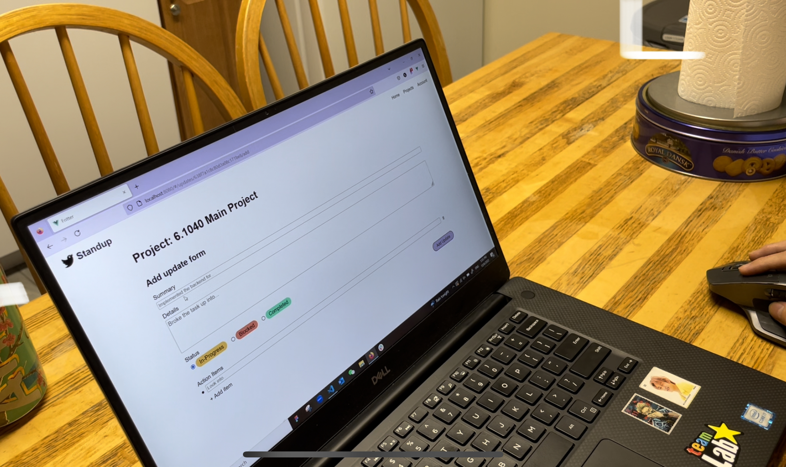

App name: Standup
User Tasks
Join an existing project
- Accept the project invitation and join the project.
- We are interested in knowing if users find the process of joining an existing project intuitive, and how they conceive the structure of a project, and how easy it is to find the teammates of the project.
Create an update
- Create an update to the project you just got invited to.
- We are interested in knowing how users interpret the different fields of “update,” for example, summary, details, status, action items
Try “eyes wanted”
- Try to get other teammates react to the update you created
- We want to test if users can speculate the intent of “eyes wanted” and would find this feature useful
Try “thanks”
- Try to acknowledge your teammates’ updates
- We want to test if users can speculate the intent of “thanks” and would find this feature useful
Create a new project
- Create a new project and invite users
- We are interested in knowing how easy it is for users to invite other users into new projects.
User testing

For the purpose of user testing, we pre-created the account with a pending invitation for the user to use. We also pre-created a project with existing updates for users to test the “thanks” concept. We explained the structure of the product to user in advance, such as “one project can have several users,” and “you can post updates in the project.” Overall, little help was provided through the user testing process. The only exception was when the user didn’t know she has completed the “eye wanted” task, and we intervened and said the task has completed.
Observations
- The user was confused about the “eye wanted” feature. Although she successfully carried out the task, she had no clue whether that was the right way to get teammates’ attention. She was unsure mainly because the website does not ask for the specific teammates, she wants to get attention from.
- Conceptual level
- Moderate severity
- It took the user some time to find the project invitation. She was expecting it on home page, and then found it on project page.
- Conceptual level
- Moderate severity
- The user was not sure what “action items” stand for and had to ask for help.
- Linguistic level
- Minor severity
- The user mentioned in the interview that each project entry on the project page looks like board instead of entry point to the actual project. She mentioned that it’s cool to have the edit button when hovering onto the project, but she might want it to be present all the time.
- Physical level
- Minor severity
- The user mentioned in the interview that she wonders how to get notification for “eyes wanted” updates from teammates. She hopes she can get “eyes wanted” notification in the communication platforms that she usually uses.
- Conceptual level
- Moderate severity
- The user also mentioned in the interview that she found that the update dashboard doesn’t show much information. She thinks the summary doesn’t convey too much information, or she doesn’t know what to focus because all the fonts are the same.
- Physical level/ conceptual level
- Minor severity
- The user mentioned in the interview that she thinks it would be useful to integrate the platform with existing tools. For example, it would be useful for a CS project update to be associated with a github link, or a design project with a design file.
- Conceptual level
- Moderate severity